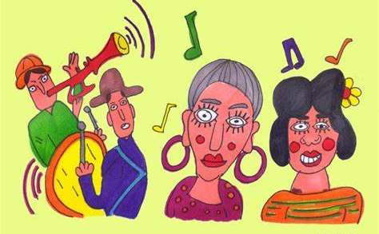

El calor del verano se combina con el bullicio de las calles mientras Puntarenas se llena de energía y alegría. Las melodías contagiosas de las cimarronas resuenan en el aire, invitándote a unirte a esta celebración única. Las trompetas, tambores y maracas se convierten en instrumentos de alegría que te transportarán a un mundo de fiesta y tradición.
